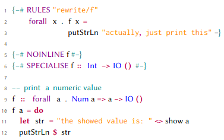

I always find myself digging through piles of old LaTeX documents to find the listings style I prefer for Haskell code. To save myself some future looking,
I will just post it here. I hope it might help someone else. It is not complete, but I will update this page when I make changes.
How listings work internally is still arcane to me, and I left comments for my future self.
\usepackage{listings}
\lstdefinestyle{haskell}{
frame=none,
xleftmargin=2pt,
stepnumber=1,
numbers=left,
numbersep=5pt,
numberstyle=\ttfamily\tiny\color[gray]{0.3},
belowcaptionskip=\bigskipamount,
alsoletter={=<>-|{}},
captionpos=b,
% you can, inside an lstlisting environment, escape the formatting by enclosing text in these tokens
escapeinside={*'}{'*},
% you can change these colors to your preferred choice
keywordstyle=[2]{\color{teal}},
keywordstyle=[3]{\color{violet}},
keywordstyle=[1]{\bf\color{purple}},
keywordstyle=[4]{\color{blue}},
keywords=[3]{INLINE, PRAGMA, NOINLINE, RULES, SPECIALISE, forall}, % add any more you might need
% put types and constructors here
keywords=[4]{Int, Bool, Double, Maybe, Either, Monad, Map, String, ByteString, IO, Proxy, KnownSymbol, Show, Read, IORef, Num, True, False, MVar, Word32, Word64, Property},
% actual keywords here
morekeywords=[1]{do, if, then, else, case, of, class, data, newtype, instance, where, deriving, import, let, in, module, qualified, type},
% keywords that are not words go here
% my experimentation leads me to believe that symbols that are substrings of other
% symbols, e.g. = is a substring of ==>, has to go before the longer one.
% Otherwise e.g. only the == part of ==> would get highlighted.
otherkeywords={<-, ->, <>, ::, \$, [, ], \,, =, =>, ==>, |, \{, \}, (, ), -\#, \#-, @},
% and then again here, if we want to assign them a specific phase for coloring
morekeywords=[2]{-\#, \#-, \{, \#, \}},
% if you want type operators to be blue, like the types, you can put them here. In this case, the symbol @ will be blue
morekeywords=[4]{@},
tabsize=2,
comment=[l]{--},
commentstyle=\color{teal}, % can add other options here, e.g. \it
stringstyle=\mdseries\rmfamily,
showspaces=false,
% change orange to another color of your choice, to color strings
delim=[s][\ttfamily\color{orange}]{"}{"},
columns=flexible,
basicstyle=\small\sffamily,
showstringspaces=false,
}
Below follow an example of what rendered code looks like in a paper
